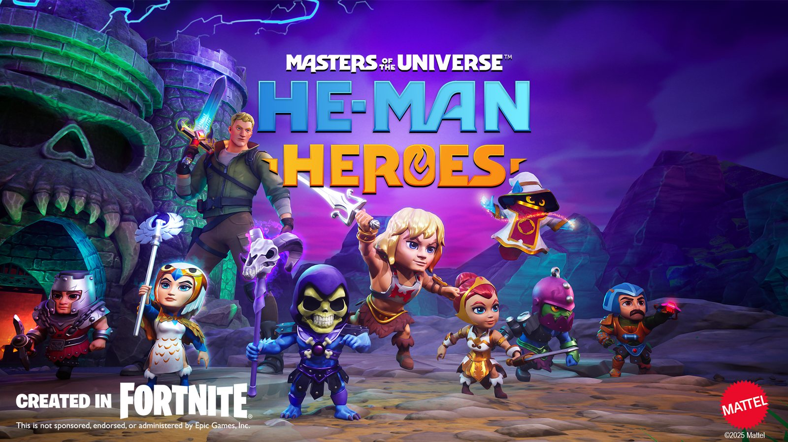
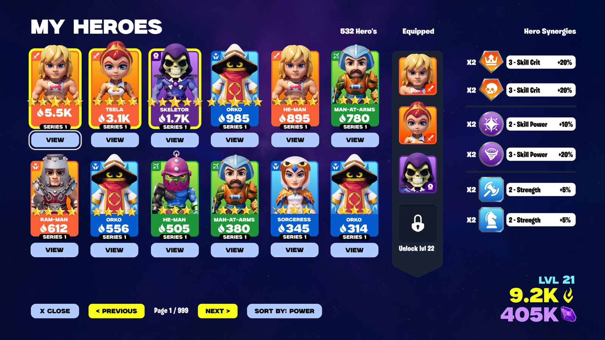
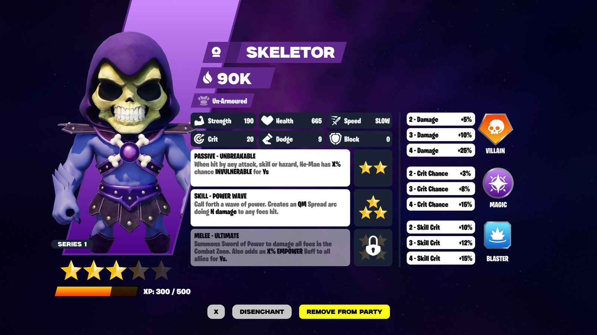
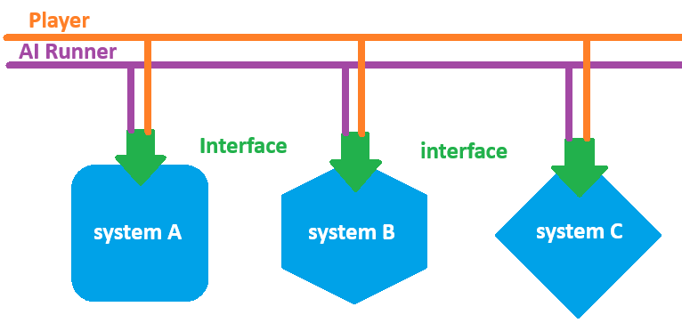
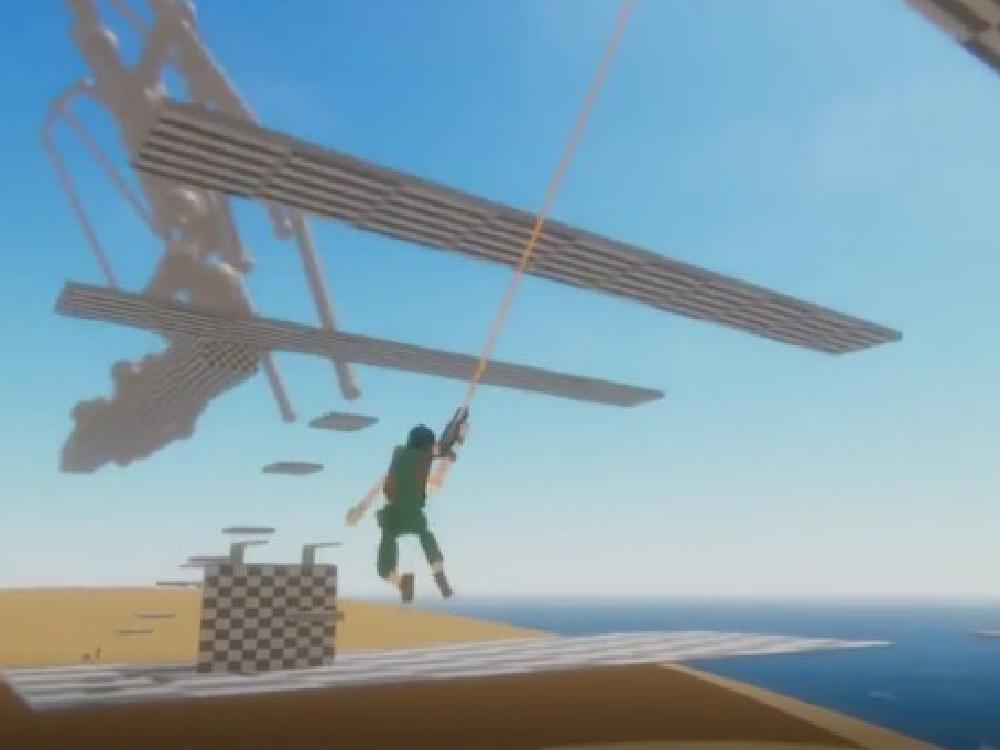
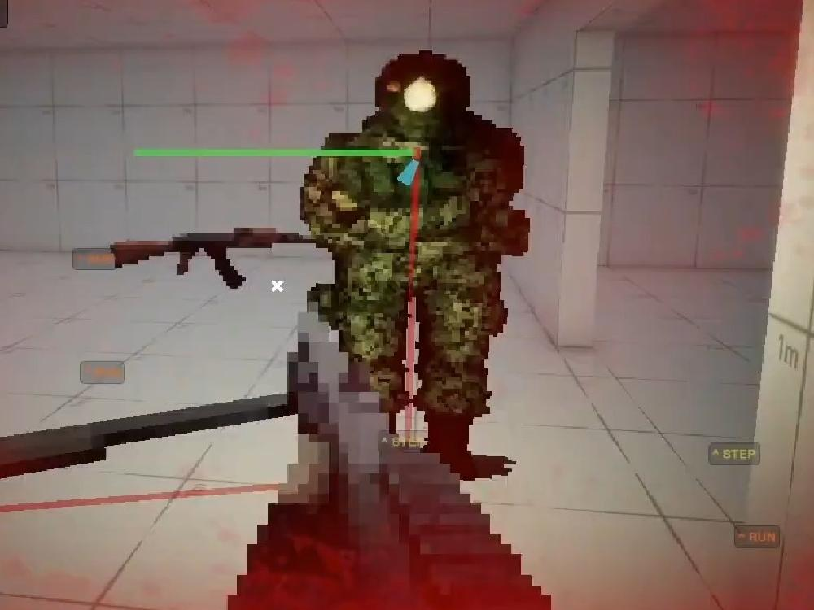
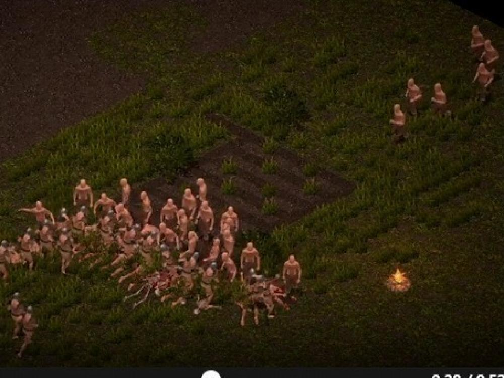
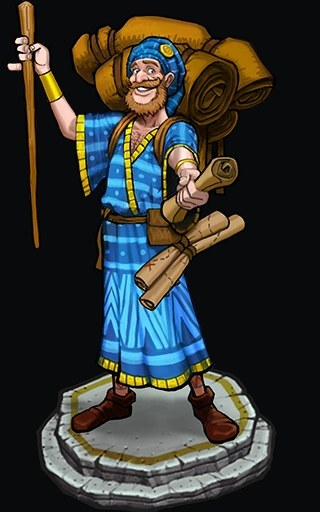
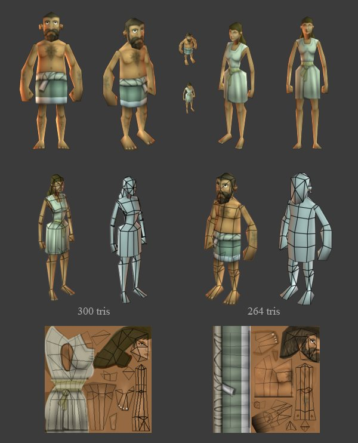

Gameplay Systems
Traversal, combat, stats, inventory, UI surfaces, input, progression gates, physics prototypes, and runtime state.
GAMEPLAY SYSTEMS & TOOLS ENGINEER
I came up through real-time character production, led engineering direction on a branded UEFN project, and now build Unity/C# systems with controlled AI-assisted workflows.
Best fit: gameplay systems, tools, technical art, and AI-assisted production roles.
That mix matters: I can talk to artists about shape and deformation, engineers about runtime ownership, and producers about what actually moved the build closer to playable.
Traversal, combat, stats, inventory, UI surfaces, input, progression gates, physics prototypes, and runtime state.
Unity editor tooling, sync pipelines, generated evidence, validation scans, runtime logs, and reviewable reports.
Low-poly production, silhouette readability, topology, UV discipline, hand-painted textures, and engine constraints.
Agent instruction files, system maps, prompt queues, source ownership rules, and checks that keep AI work bounded.

Engineering direction and creative leadership on a branded Fortnite/UEFN project for Mattel's Masters of the Universe franchise.

Character collection, equipped heroes, level/power readouts, and stat/synergy presentation driven by a large hand-authored data set.

Stats, abilities, tiers, unlocks, strengths, rarity, passives, upgrades, and role data managed through spreadsheet export and Verse implementation.
The useful part of AI in game development is not that it can write code. The useful part is what happens when a project is structured so an agent can find the right owner, make a bounded change, validate it, and leave evidence for the next pass.
That is the lane I care about: faster iteration without turning the codebase into a junk pile. Clear owners. Small contracts. Runtime proof. Tools that help humans and agents both understand the project.

The in-engine runner plays through route stages, invokes player-equivalent actions, records screenshots and logs, and exposes where the build actually progresses or blocks.

A rough layout became a functioning judge-console scene with case surfaces, status readouts, verdict controls, and runtime systems wired into the prototype.

Automated runners move, interact, capture screenshots, JSON reports, logs, intent, failed progress, and observed outcomes.

Grapple + gliderControllable movement transitions, rope behavior, momentum, and player feel.

Runtime frameworkStats, modifiers, state, conditions, and debugging built as reusable gameplay logic.

Rendering pipelineLayered character presentation, modular assembly, pathfinding, and runtime structure.
Shipped production art

Stylized character direction with clear silhouette, costume reads, and production-friendly visual targets.

Modeled and textured humanoid units under strict runtime constraints for Age of Empires Online.
Full civilization unit rosters built for readability, performance, animation handoff, and final engine presentation.

I went to art school, got hired in game art, then kept moving toward the parts of production I did not understand yet. I taught myself C#, Unity, shaders, materials, animation systems, editor tooling, websites, AI-assisted workflows, and more because the work kept exposing the next bottleneck.
I am comfortable self directing myself towards finding the weak part of a pipeline, deciding what needs to be learned or built next, and managing the work without waiting for someone else to define every step.
That's how I approach development now:
build the system, test the feel, fix what breaks, and keep pushing until it works.
I'm a competitive player at heart. I'm drawn to games where understanding the system, reading pressure, and executing better than the other player actually matter.
I am currently living in the middle of the woods, building game systems, prototypes, and AI-assisted workflows.